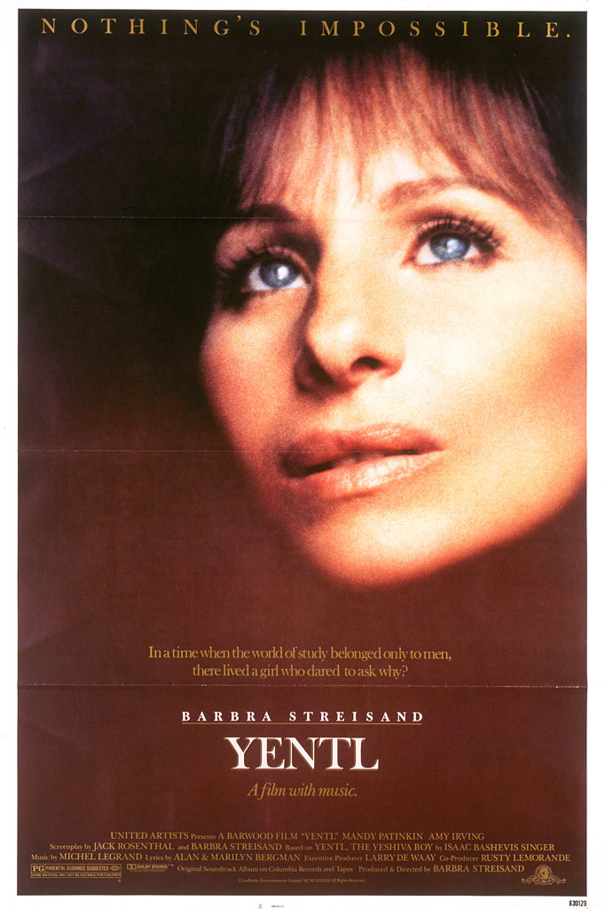

Yentl
56th Academy Awards
(Oscars 1984)
5 Nominations, 1 Award
| Nominations | ||
|---|---|---|
| Category | Nominees | Result |
| Actress in a Supporting Role | Amy Irving | Nominated |
| Art Direction | Leslie Tomkins, Roy Walker, and Tessa Davies | Nominated |
| Music (Original Song Score or Adaptation Score) | Alan Bergman, Marilyn Bergman, and Michel Legrand | Won |
| Music (Original Song) "Papa, Can You Hear Me?" |
Alan Bergman, Marilyn Bergman, and Michel Legrand | Nominated |
| Music (Original Song) "The Way He Makes Me Feel" |
Alan Bergman, Marilyn Bergman, and Michel Legrand | Nominated |